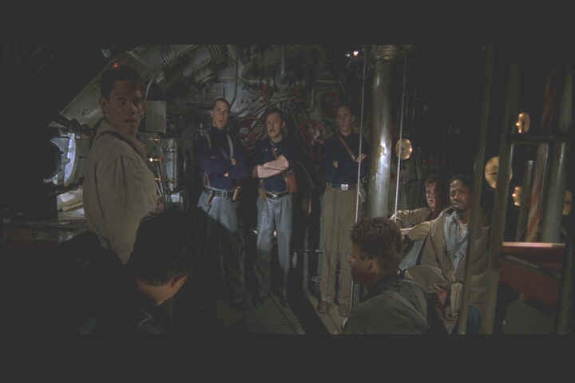

| U-571
(SE)/B,A |
| Universal/2000/117/ANA 2.35 |
Solid underwater entertainment. Slick
editing produces explosive action, lots of tension and sweaty excitement. Script and characters are slightly too
pat, but splash for splash you'll get a charge.
 |
|
Taking care of
business. ©Universal |
Lieutenant Andrew Tyler is up for a promotion
and command of his own submarine. Sub commander Lt. Commander Mike Dahlgren
wants him for one last important voyage. The Allied command has plotted a bold plan to capture an enemy cryptography
encoder. If the sub team pulls off
the job without a slipup it could well make a difference in winning the
war.
Pinging around the hull of U-571 hull are reminders of other submarine films. The conflict between Lt.
Dahlgren and Tyler is reminiscent of
Run Silent, Run Deep, a
solid fifties sub drama directed by Robert Wise and starring Clark Gable and Burt Lancaster.
Can you watch a sub movie without comparing the perspiration of Das
Boot? Still, U-571 has its own voice. I don't think the film is overly
ambitious. It sets out
to be an entertainment and keeps its torpedo tubes loaded and on target.
Matthew McConaughey is convincing enough as Tyler, though somewhat callow. Methinks he doth cringe too much. Bill Paxton, always smooth and easy-going, assays Dahlgren with quiet authority. And Harvey Keitel is lots of fun in the role of Chief
Klough. David Keith is a strong presence as Captain, but the script short
shrifts his character. Jake Weber as Lt. Hirsch is too remote for my taste. He seemed all at sea in a submarine.
Director Jonathan Mostow knows his way around nail-biting
action. His previous effort, Breakdown, offered plenty of
thrills, chills, and excitement. U-571 is a better script. Mostow keeps
the action on even keel while the sub lists. Characterizations aren't as strong
as the visceral effort.
Great looking DVD with amazing sound.
Even with very dark source material, U-571 is a sparkling DVD. Resolution is resolved to maximum effect. You can count the beads of sweat on McConaughey's forehead. Blacks are very deep and lustrous. Shadow detail is
outstanding. This one's a good challenge for fixed pixel projectors. If you can
get it to look right with DLP, LCD or D-ILA, you've really got a hummer.
Better turn down the reference level for the DTS version if you listen that way.
The DTS surround is a deep sea voyage in itself. There were enough depth charges exploding in my home theater that I literally felt like I had gone ten rounds with a young Muhammad Ali. The audience gets a little sampling of what it must be like on a sub during those miserable silent running moments when the sea
explodes all around. My recommendation would be to set the sound levels at least 5db down from your
usual setting.
The special edition includes commentary from Mostow, a making of
featurette, cast and crew interviews, and additional submarine supplements. There's enough to
keep you underwater for a long voyage.
U-571 is a good submarine yarn with lots of earned perspiration.
|
|

Selections from the Feature Archive include articles on
Akira Kurosawa, Frank
Darabont, Blonde Bimbos, Hollywood Street Gangs, or Vietnam: The
Hollywood Pariah, and many more....
Body Parts

Hollywood's long fascination with parts of the body is explored
piece by piece.

Searchers,
The/ A,B

John Wayne invests Ethan Edwards with enormous dignity and
determination. A classic western from director John Ford. Mesmerizingly beautiful.

With the introduction of the Columbia Super Bit collection it looks
like a new wave of repackaging marketing might be just around the corner.
New Edition: Bit by Bit

The
Movie Poster Archive includes extensive poster images from the films of stars like Susan Hayward,
Kirk Douglas, Katharine Hepburn and many more. Our featured star is Doris Day.
|